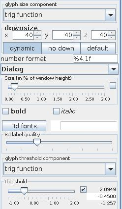
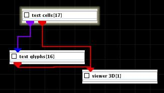
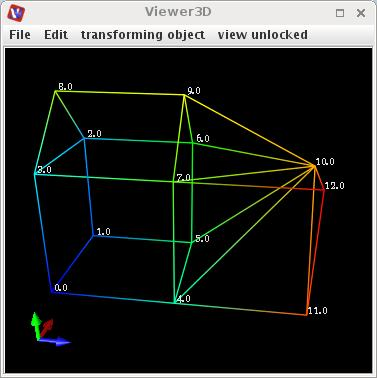

|
|
|

| input port | type | description | data acceptors |
|---|---|---|---|
| inField | VNField | Regular Field Irregular Field |
|
| output port | type | description | data schemas |
| outObj | VNGeometryObject |
Text glyphs
The module displays values of veclen=1 field components as text strings at their mesh coordinates.
Input data
The input field is regular or irregular.
Output data
At output there is a geometry object.
Computation parameters

The glyph size component drop down list defines the field component with veclen=1 for which there are displayed text glyphs.
The user can adjust downsize factors using downsize input text fields. Downsize reduces the size of the field, saving processing time and memory by "thinning out" data. Default downsize values depend on the dimensions of the input field and are chosen automatically.
If dynamic button is pressed output is generated every time the downsize parameter changes. No down button cancels downsize. Default button adjusts the default values for downsize.
The number format text field defines the format of the text glyphs.
Font drop down list defines the font of the numbers.
The size slider scales the size of the font in percent of the window height. If check box on the right hand side is on the user can change minimum, maximum and current value.
The bold and italic check boxes define font style as bold and/or italic.
Use 2d fonts/3d fonts button to switch between 2D or 3D number fonts. By default 3D fonts are used.
In the case of 3d fonts the 3d label quality slider is active and the user can increase the quality of the fonts.
Text glyphs are presented in mesh coordinates for which the value of the scalar component in glyph threshold component drop down list is above the value defined by threshold slider.
Presentation tab
Presentation tab contents are described in the common interfaces section unter the Presentation Panel entry.
Example

Choose test cells module from test objects library and text glyphs module from general mappers and accessories library and connect them. In test cells module GUI switch surface mode off and line mode on. In text glyphs module choose downsize value 1 and appropriate font and font size.
